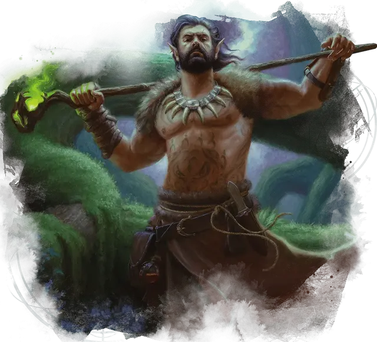

Архидруид
Archdruid
Средний Гуманоид (Друид), любое мировоззрение

Класс Доспеха 14 (шкурный доспех)
Хиты 154 (28к8 + 28)
Скорость 30 футов
| мод | спас | ||
|---|---|---|---|
| СИЛ | 14 | +2 | +2 |
| ЛОВ | 14 | +2 | +2 |
| ТЕЛ | 12 | +1 | +1 |
| мод | спас | ||
|---|---|---|---|
| ИНТ | 12 | +1 | +5 |
| МДР | 20 | +5 | +9 |
| ХАР | 11 | +0 | +0 |
Навыки Восприятие +9, Медицина +9, Природа +5
Чувства пассивное Восприятие 19
Языки Друидический, и любые два языка
Опасность 12 (8400 опыта)
Бонус мастерства +4
Среда обитания Болото, Горы, Лес
Действия
Мультиатака. Архидруид совершает три атаки Посохом или Диким огнём. Он может заменить одну из атак наложением заклинания с помощью Использования заклинаний.
Посох. Рукопашная атака оружием: +6 к попаданию, досягаемость 5 футов, одна цель. Попадание: 5 (1к6 + 2) дробящего урона плюс 21 (6к6) урона ядом.
Дикий огонь. Дальнобойная атака заклинанием: +9 к попаданию, дистанция 120 футов, одна цель. Попадание: 26 (6к6 + 5) урона огнём и цель становится ослеплённой до начала следующего хода архидруида.
Использование заклинаний. Архидруид накладывает одно из следующих заклинаний, используя Мудрость в качестве базовой характеристики (Сл спасброска от заклинаний 17):
• Неограниченно: животные чувства [beast sense], опутывание [entangle], разговор с животными [speak with animals];
• 2/день каждое: почтовое животное [animal messenger], подчинение зверя [dominate beast], огонь фей [faerie fire], древесный путь [tree stride];
• 1/день каждое: общение с природой [commune with nature] (накладывается действием), множественное лечение ран [mass cure wounds].
Бонусные действия
Изменение облика (2/день). Архидруид при помощи магии превращается в животное или элементаля с показателем опасности 6 или меньше, и может оставаться в этом облике в течение 9 часов. Архидруид может выбрать, какое снаряжение останется лежать на земле, какое сольётся с новым обликом, а какое будет надето в новом облике. Архидруид возвращается в свой истинный облик, если он умрет или потеряет сознание. Архидруид может вернуться в свой истинный облик бонусным действием в свой ход.
Находясь в новом облике, архидруид сохраняет свои игровые параметры и способность говорить, но его КД, способы передвижения, Сила и Ловкость заменяются таковыми для нового облика, и получает все особые чувства, мастерство, черты, действия и реакции (кроме особенностей класса, легендарных действий, и действий логова), который имеет новый облик и не имел друид. Он может накладывать свои заклинания с вербальными или соматическими компонентами в своем новом облике.
В новом облике атаки считаются магическими при определении сопротивления и иммунитета от немагических атак.
Описание
Архидруиды следят за чудесами природы своих владений. Они редко взаимодействуют с цивилизованными народами, если нет серьезной угрозы природному порядку. У архидруида, как правило, один или более учеников, которые являются друидами [druid], и логово архидруида обычно охраняют лояльные к нему Звери и Феи.
Когда архидруид использует свое "Изменение облика", вы можете выбрать существо, в которое он превратится, соблюдая ограниченные действия. Или вы можете совершить бросок по таблице "Любимые облики Архидруида", чтобы определить облик, которую примет архидруид.